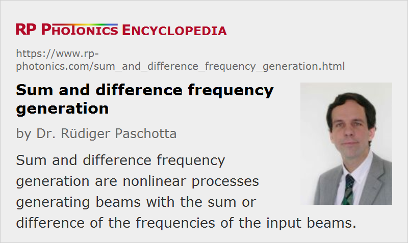

Sum and Difference Frequency Generation
Acronym: SFG, DFG
Definition: nonlinear processes generating beams with the sum or difference of the frequencies of the input beams
More general terms: nonlinear frequency conversion
German: Summen- und Differenzfrequenzerzeugung
How to cite the article; suggest additional literature
Author: Dr. Rüdiger Paschotta
Crystal materials lacking inversion symmetry can exhibit a so-called χ(2) nonlinearity. In such nonlinear crystal materials, sum frequency generation (SFG) or difference frequency generation (DFG) can occur, where two pump beams generate another beam with the sum or difference of the optical frequencies of the pump beams. Such a process requires phase matching to be efficient, and usually there is no simultaneous phase matching for sum and difference frequency generation. A sum frequency mixer is sometimes called a FASOR (Frequency Addition Source of Optical Radiation).
A special case is sum frequency generation with an original pump wave and a frequency-doubled part of it, effectively leading to frequency tripling. Such a cascaded process can be much more efficient than direct frequency tripling on the basis of a χ(3) nonlinearity.
Typical Applications
Some typical applications of sum frequency generation are:
- generation of red light (→ red lasers), e.g. by mixing the outputs of a 1064-nm Nd:YAG laser and a 1535-nm fiber laser, resulting in an output at 628 nm
- generation of ultraviolet light, e.g. by mixing the output of a 1064-nm Nd:YAG laser with frequency-doubled light at 532 nm, resulting in 355-nm UV light
Difference frequency mixing with pump waves of similar frequency can lead to a mixing product with a long wavelength. Some examples are:
- generation of light around 3.3 μm by mixing 1570 nm from a fiber laser and 1064 nm
- generation of light around 4.5 μm by mixing 860 nm from a laser diode and 1064 nm
Such mid-infrared wavelengths are required, e.g., for the laser spectroscopy of gases.
Difference frequency generation can also be used for generating terahertz waves. For efficient terahertz wave generation, there are special semiconductor-based photomixers, where the terahertz beat note of two similar optical frequencies generates an oscillation of the carrier density in the semiconductor, which is translated into an oscillating current and then into terahertz radiation.
Insight from a Photon Picture
In a sum frequency mixer, both pump waves experience pump depletion when the signal becomes intense. For efficient conversion, the photon fluxes of both input pump waves should be similar. If one input wave has a lower photon flux, and its power is totally depleted somewhere in the crystal, there can be backconversion during subsequent propagation.
In a difference frequency mixer, the lower-frequency wave is amplified rather than depleted. This is because photons of the beam with highest photon energy (shortest wavelength) are effectively split into two lower-frequency photons, thus adding optical power to both lower-frequency waves. The term parametric amplification emphasizes the aspect of amplification, and the difference frequency mixing product is then called the idler wave.
Carrier–Envelope Offset Frequencies
The carrier–envelope offset frequency (CEO frequency) of the output of a sum or difference frequency mixer is essentially the sum or difference, respectively, of those frequencies for the input. (The result may have to be corrected by subtracting the line spacing, which is identical to the pulse repetition rate, in order to get back to the interval from zero to the line spacing.)
It is interesting to consider what happens if difference frequency generation is applied to the low- and high-frequency components of a broadband frequency comb, which can be generated e.g. with a femtosecond laser, possibly followed by an optical fiber for supercontinuum generation. The CEO frequency of the output is then the difference between two identical frequencies, i.e., zero. This implies that the carrier–envelope offset phase is temporally constant. (In practice, it may still exhibit some drift, but only with a quite limited range.) This principle is realized in some the wises for obtaining a more or less constant CEO phase without employing active stabilization methods.
Suppliers
The RP Photonics Buyer's Guide contains 12 suppliers for sum and difference frequency generators. Among them:
Questions and Comments from Users
Here you can submit questions and comments. As far as they get accepted by the author, they will appear above this paragraph together with the author’s answer. The author will decide on acceptance based on certain criteria. Essentially, the issue must be of sufficiently broad interest.
Please do not enter personal data here; we would otherwise delete it soon. (See also our privacy declaration.) If you wish to receive personal feedback or consultancy from the author, please contact him e.g. via e-mail.
By submitting the information, you give your consent to the potential publication of your inputs on our website according to our rules. (If you later retract your consent, we will delete those inputs.) As your inputs are first reviewed by the author, they may be published with some delay.
Bibliography
| [1] | M. Bass et al., “Optical mixing”, Phys. Rev. Lett. 8 (1), 18 (1962), doi:10.1103/PhysRevLett.8.18 |
| [2] | S. Guha and J. Falk, “The effects of focusing in the three-frequency parametric upconverter”, J. Appl. Phys. 51 (1), 50 (1980), doi:10.1063/1.327353 |
See also: frequency doubling, frequency tripling, parametric amplification, parametric nonlinearities, phase matching, mid-infrared laser sources
and other articles in the category nonlinear optics
|  |
If you like this page, please share the link with your friends and colleagues, e.g. via social media:
These sharing buttons are implemented in a privacy-friendly way!